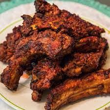

Remove membrane from back of ribs or score with a sharp knife. Place ribs in a shallow dish and season with salt and pepper.
Puree onion in a blender or food processor. Add kochujang, vinegar, garlic, sesame oil, soy sauce, and minced ginger; puree into a sauce. Rub 1/3 generously over ribs, reserving the rest of the sauce. Cover ribs with plastic wrap and